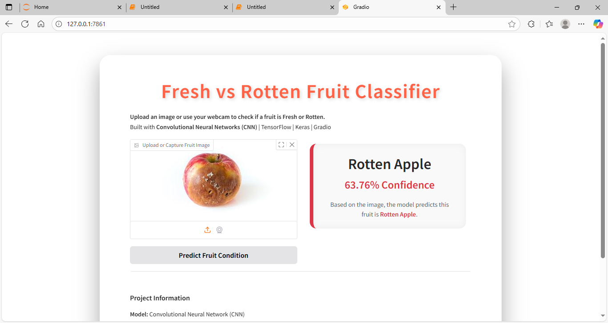
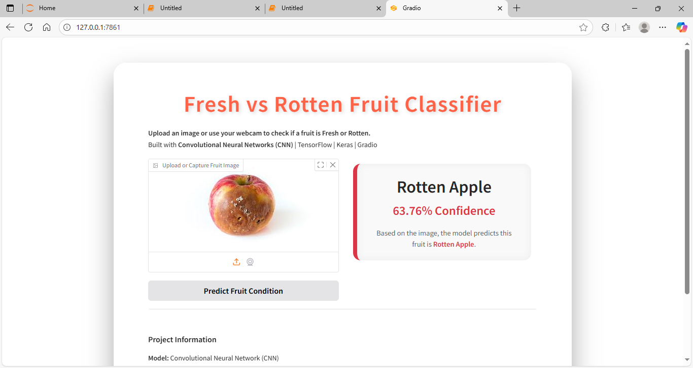

AI-powered Fresh vs Rotten Fruit Recognition
Computer Vision demo using a Convolutional Neural Network to classify Apples, Bananas and Oranges as Fresh or Rotten.
Quick Summary
Goal: Detect whether fruit images are Fresh or Rotten.
Scope: 3 fruit types — Apple, Banana, Orange (fresh/rotten).
Pipeline — Step by Step
Use the Kaggle dataset: Fruits - Fresh and Rotten. Train/test folders with subfolders for each class (freshapples, rottenapples, etc.).
- Organize images into
train/andtest/ - Ensure balanced classes or apply augmentation
Resize images (e.g. 150×150), rescale pixel values to 0–1, and apply augmentation (rotation, flip, zoom) during training for robustness.
Convolutional Neural Network (Conv2D → MaxPool → Flatten → Dense). Final activation: softmax for 6 classes (3 fruits × fresh/rotten).
Train for multiple epochs, plot training/validation accuracy and loss. Save the best model to disk.
Load the saved model and serve via Gradio — interactive UI for image upload + webcam capture and instant predictions.
def predict_image(img):
img = tf.image.resize(img,(150,150))/255.0
pred = model.predict(img[np.newaxis,...])[0]
label = np.argmax(pred)
return {labels[label]: float(pred[label])}
Business Problem Solved
This proof-of-concept helps solve real-world operational problems for grocery stores, supply chains and small farms:
- Reduce waste: automatically detect rotten produce to avoid stocking/selling spoiled items.
- Quality control: speed up manual inspection processes at packing or store level.
- User experience: consumer app to verify freshness at home or markets.
How it adds value: faster inspections, fewer returns, improved customer trust and cost savings through less spoilage.
Limitations & Future Work
- Model currently handles only 3 fruits (Apple, Banana, Orange).
- Accuracy depends on dataset size and image variety (lighting, angles, background).
- Edge-case rottenness or partially rotten fruits can be ambiguous.
- Use transfer learning (EfficientNet / ResNet) for better accuracy.
- Collect more labeled images from varied sources and augment heavily.
- Real-time camera integration and cloud deployment (HuggingFace Spaces / Streamlit Cloud).
Key note: The system works well as a proof-of-concept — but to make it production-ready, it needs significantly more data and robust testing.
Demo Screenshots
Below are results from the Gradio demo.
 



How to Run (Quick)
- Place this HTML file and the screenshots in a folder with your `fruit_cnn_model.h5` and `app.py` (optional).
- To run the interactive demo, run the Gradio app:
python app.pyand openhttp://127.0.0.1:7860. - Notebook: open the Jupyter Notebook (e.g.,
Day75_Fruit_Classification_CNN.ipynb) to see training and code walkthrough.